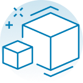

Карьер Курганинский
О компании
-
Высокое качество выпускаемой продукции благодаря контролю собственной лаборатории.
-
Оборудование от лучших производителей мирового уровня.
-
Высокая экологичность производства - добываемое сырье доставляется с карьера до заводов по цепи конвейеров.
-

Собственные подъездные ж\д пути с маневровым тепловозом обеспечивающим отгрузку до 100 вагонов в сутки.
-

Широкий ассортимент выпускаемой продукции.
-
Автомобильный весовой терминал с 2-мя автовесовыми производительностью до 180 автоприцепов в сутки.
-
2 Высокое качество выпускаемой продукции благодаря контролю собственной лаборатории.
-
Оборудование от лучших производителей мирового уровня.
-
Высокая экологичность производства - добываемое сырье доставляется с карьера до заводов по цепи конвейеров.
-
Собственные подъездные ж\д пути с маневровым тепловозом обеспечивающим отгрузку до 100 вагонов в сутки.
-
Широкий ассортимент выпускаемой продукции.
-
Автомобильный весовой терминал с 2-мя автовесовыми производительностью до 180 автоприцепов в сутки.
Продукция
Кубовидный щебень и песок компания «Выбор» производит на собственном карьере в г. Курганинске на дробильном оборудовании Sandvik, BHS и сортировочном оборудовании Binder. Скачать прайс
Перейти в каталог
Скачать прайс
Перейти в каталог
Промывка переработанного сырья, и передовые способы дробления и сортировки, применяемые на ДСЗ, ДСЗ-2 позволяют получать широкую линейку высококачественного кубовидного щебня многоцелевого применения.
Промывка переработанного сырья, и передовые способы дробления и сортировки, применяемые на ДСЗ, ДСЗ-2 позволяют получать широкую линейку высококачественного кубовидного щебня многоцелевого применения.
Промывка переработанного сырья, и передовые способы дробления и сортировки, применяемые на ДСЗ, ДСЗ-2 позволяют получать широкую линейку высококачественного кубовидного щебня многоцелевого применения.
Промывка переработанного сырья, и передовые способы дробления и сортировки, применяемые на ДСЗ, ДСЗ-2 позволяют получать широкую линейку высококачественного кубовидного щебня многоцелевого применения.
Промывка переработанного сырья, и передовые способы дробления и сортировки, применяемые на ДСЗ, ДСЗ-2 позволяют получать широкую линейку высококачественного кубовидного щебня многоцелевого применения.
Карьер
Кубовидный щебень и песок компания «Выбор» производит на собственном карьере в г. Курганинске на дробильном оборудовании Sandvik, BHS и сортировочном оборудовании Binder.
Завод расположен на месторождении валунно-гравийно-песчаной смеси площадью более 250 га, запасы месторождения более 30 000 000 м3. Использование высокопроизводительного оборудования, лучших компонентов и непрерывный лаборато- рный контроль позволяет выпускать продукцию, отвечающую всем требованиям и соответствующую стандартам РФ.
- 2009 Запуск крупнейшего в Краснодарском крае дробильно-сортировочного завода (производительность – 2 млн. м3в год).
- 2011 Запуск плавучего грейферного земснаряда (производительность – 800 тонн в час).
- 2011 Открытие завода по производству элементов благоустройства и стенового ограждения.
- 2019 Открытие установки рассева узких фракций.
- 2021 Открытие ДСЗ-2.
Наши достижения
-
2
млн. м² - самое крупное месторождение в Краснодарском крае.
-
33
тыс. м³ утвержденных запасов.
-
22
тыс. м³ остатка балансовых запасов
-
10
тыс. тонн отгрузки в сутки.
-
2
завода с оборудованием мирового уровня «METSO», «BHS SONTHOFER».
-
20
метров глубина добычи уникальным в России плавучим грейферным снарядом фирмы «ROHR BAGGER».
 Обратный звонок
Обратный звонок